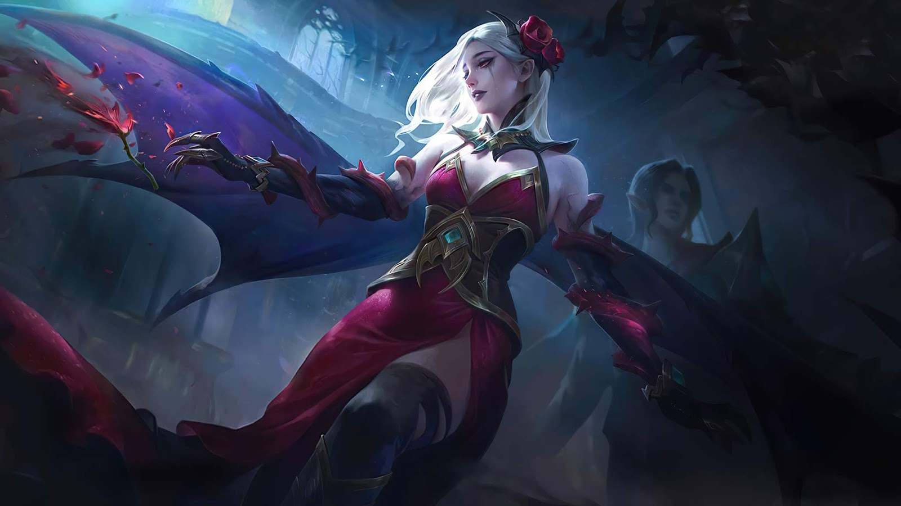
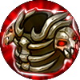
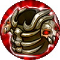

|  | |
|
Кармилла
|
|
|
Кармилла - герой класса поддержка. Её особенностью является совместный навык с героем Сесилион
|
|
"Пусть мир будетохвачен кровью!"
-Кармилла |
 |
Дата выхода: - 16 января 2020 года |
|
| История героя: | |
| Кармилла родилась в замке Аберлин и была единственной дочкой графа. Когда она выросла, все поняли какой красавицей она стала. Многие аристократы, пытались расположить ее к себе и завоевать ее сердце. Однако, все чего хотела молодая дворянка, это найти свою «Родственную душу». В это время угроза Бездны, все ближе подбиралась к владениям графа. Он принимает решение, укрепить свои позиции, за счет удачного брака его дочери. Однако, планам графа не суждено было свершиться, все они разбились, стоило появиться оперному певцу Сесилиону. Молодая графиня, стала его самой большой поклонницей, не пропуская ни одного выступления певца. Он казался ей таким элегантным и талантливым, но в его глазах, она всегда, видела огромную тоску и тайну. После того как их глаза встретились, она поняла, что нашла свою любовь. Следующие дни были самыми счастливыми в ее жизни. Ночью он пробирался к ней, они танцевали под луной и наслаждались обществом друг друга. Когда, про все это узнал граф, он закрыл театр, а дочери, запретил общаться с Сесилионом. Но Кармилла, не прекращала бороться и не желала поддаваться воле отца. Однако прочитав прощальное письмо от певца, ее сердце было разбито, а жизнь стала бессмысленной. Наблюдая за уходом Сесилиона, она не выдержала и порезала свои запястья острым кинжалом. Таким образом, она похоронила свою любовь. Какое было ее удивление, когда она очнулась в объятьях Сесилиона, глаза которого за долгое время отражали доброту, а не тоску. Взглянув в зеркало она обнаружила, что ее кожа стала такой же бледной, как и у актера, а тело не издавало признаков жизни. В этот момент она поняла, что любимый не оставил ее, а оживил своей кровью, и теперь они смогут вечно жить вместе. | |
Слабые и сильные стороны: Слабые:
Cильные:
Сборка героя:
 



Эмблемы
Выбор линии:
Так, как Кармилла - поддержка, в начале игры она отправляется на помощь главному дамагеру
Пассивное: Пакт вампира
Кармилла крадет 6-10 Физической и Магической защиты врагов, при этом нанося им урон. Каждую цель можно обокрасть только 1 раз в 5 секунд . Украденная защита складывается до 5 раз. Длительность 5 секунд.

1 Навык: Алый цветок
Герой повышает свою скорость передвижения на 25% и призывает 2 Алых Цветка , которые вращаются вокруг нее 5 сек. Враг поврежденных цветком получит магический урон и будет замедлена на 30% на 0.8 сек. При этом скорость вращения цветков будет повышена.

2 Навык: Кровопролитие
Кармилла накапливает Энергию кровопролития, увеличивая свою Скорость Передвижения на 45% на 3-5 сек.
Повторное использование: Кармилла направляет Энергию Кровопролития в указанного врага,нанося магический урон и оглушая его на 0,6-1,5сек. Урон и время оглушения зависит от времени накапливания энергии.

Ультимативная способность: Проклятие крови
Использует навык в указанном направлении. Проклятие передается от задетого врага к ближайшим вражеским героям нанося магический урон и замедляет их на 35% на 5 сек.( максимум 4 цели). Проклятые враги делят между собой понижение урона и эффекты контроля которые уменьшены на 50%

|